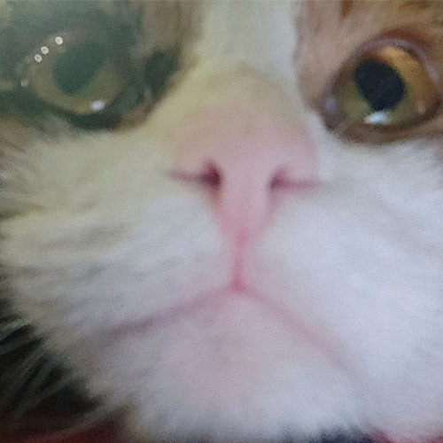
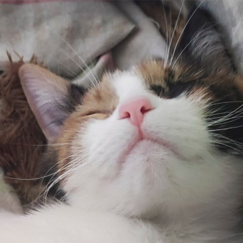
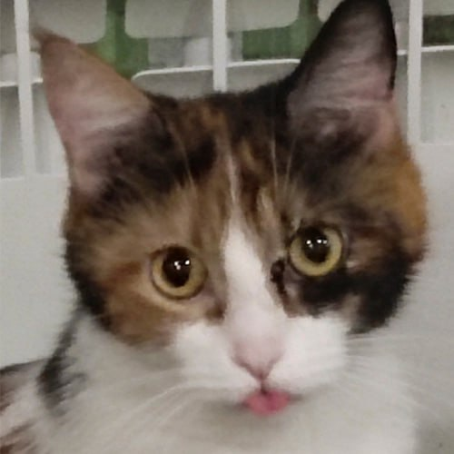
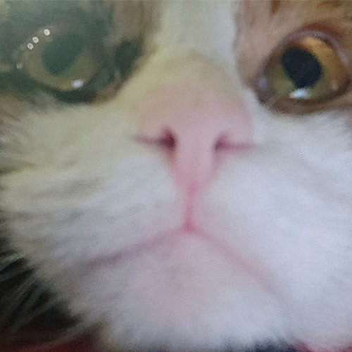
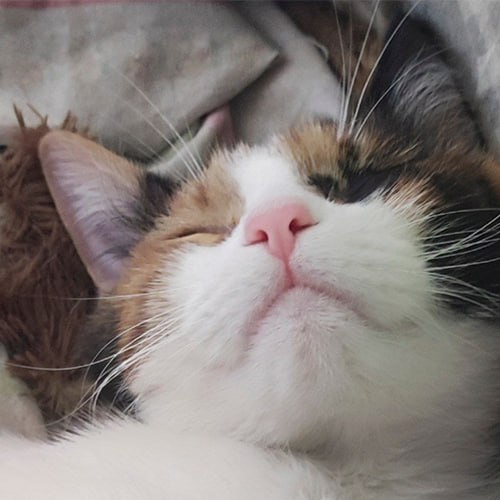
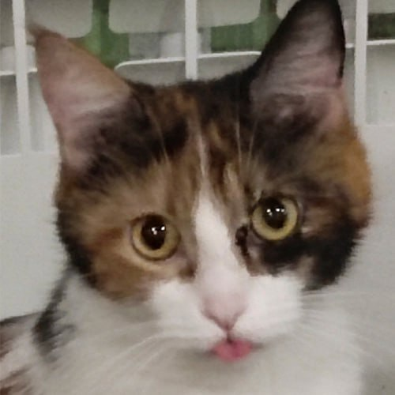

it's me
it's me
it's me
it's me
My name is Senna, I like to walk,play and sleep a lot.
I am a very calm cat and I love my friend very much,
though they are people, but it doesn't matter.
And in the photo on the right, by the way, I'm.
 




